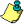
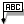

Show Phantoms
SHIFT-CTRL-P
Show Phantoms
SHIFT-CTRL-P
There are several elements that support visibility support; including the axis and grids, comments, phantom elements and point labels.
The Axis and Grid lines are displayed by default; however, they can be toggled on or off via the Show Grids switch in the menu.
| Show Grid CTRL-G |
Comments are an innovation that was added to enable the operator to create reminders of things that need to be done. The display of the comments can be toggled on or off via the Show Comments switch in the menu.
|  Show Comments |
When an element is erased it is not permanently deleted from the model. The element becomes a phantom element that can be restored via the Restore function. The display of the phantom elements can be toggled on or off via the Show Phantoms switch in the menu.
|
Show Phantoms
SHIFT-CTRL-P
|
The display of the point element labels can be toggled on or off via the Show Point Labels switch in the menu.
|  Show Point Labels |